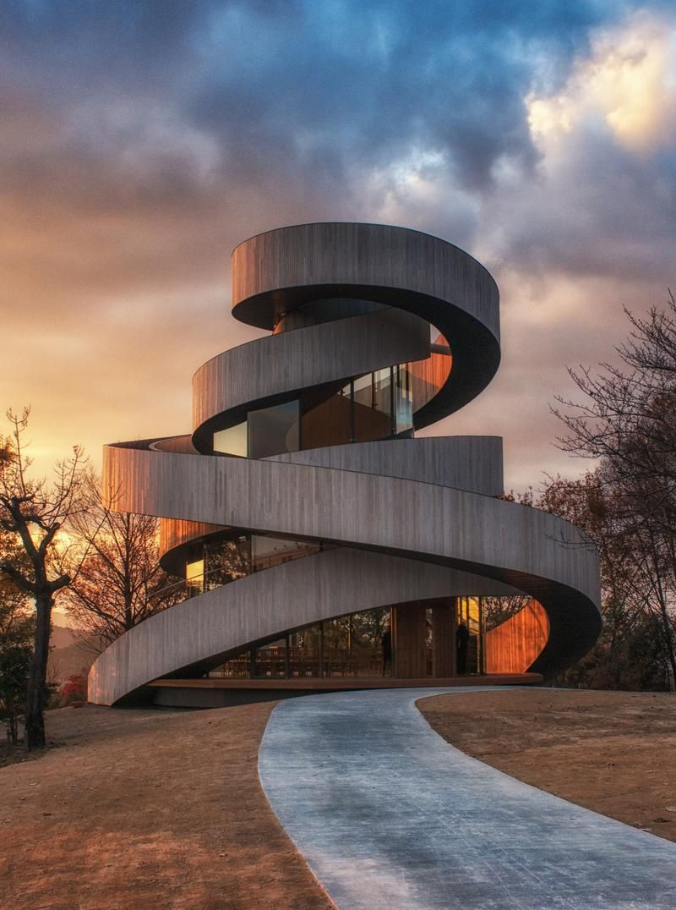

Arhitectura (latina architectura, din grecescul ἀρχιτέκτων arkhitekton „arhitect”, din ἀρχι- „șef” și τέκτων „creator”) este atât procesul, cât și produsul planificării, proiectării și construirii clădirilor sau a altor structuri. Lucrările arhitecturale, sub forma materială a clădirilor, sunt adesea percepute ca simboluri culturale și ca opere de artă. Civilizațiile din istorie sunt adesea identificate cu realizările lor arhitecturale care au supraviețuit.
Practica, care a început în era preistorică, a fost folosită ca modalitate de exprimare a culturii pentru civilizații de pe toate cele șapte continente. Din acest motiv, arhitectura este considerată o formă de artă. Textele despre arhitectură au fost scrise din cele mai vechi timpuri. Cel mai vechi text care a supraviețuit despre teoria arhitecturii este tratatul "De architectura" din secolul I d.Hr., al arhitectului roman Vitruvius, potrivit căruia o clădire bună întruchipează firmitas, utilitas și venustas (durabilitate, utilitate și frumusețe). Secole mai târziu, Leon Battista Alberti și-a dezvoltat ideile în continuare, văzând frumusețea ca o calitate obiectivă a clădirilor care se regăsesc în proporțiile lor. Giorgio Vasari a scris Viața celor mai excelenți pictori, sculptori și arhitecți și a prezentat ideea stilului în artă în secolul al XVI-lea. În secolul al XIX-lea, Louis Sullivan a declarat că „forma urmează funcției”. „Funcția” a început să înlocuiască „utilitatea” clasică și a fost înțeleasă că include nu numai dimensiuni practice, ci și estetice, psihologice și culturale. Ideea arhitecturii durabile a fost introdusă la sfârșitul secolului al XX-lea..
Arhitectura a început ca o arhitectură vernaculară rurală, orală, care s-a dezvoltat de la încercare și eroare la replicarea cu succes. Arhitectura urbană antică a fost preocupată de construirea structurilor religioase și a clădirilor care simbolizează puterea politică a conducătorilor, până când arhitectura greacă și romană și-a mutat atenția asupra virtuților civice. Arhitectura indiană și chineză a influențat formele din toată Asia și arhitectura budistă, în special, a luat diverse arome locale. În timpul evului mediu european, au apărut stiluri paneuropene de catedrale și abații romanice și gotice, în timp ce Renașterea a favorizat formele clasice puse în aplicare de arhitecți cunoscuți pe nume. Mai târziu, rolurile arhitecților și inginerilor s-au separat. Arhitectura modernă a început după primul război mondial ca o mișcare de avangardă care a încercat să dezvolte un stil complet nou, adecvat pentru o nouă ordine socială și economică postbelică axată pe satisfacerea nevoilor clasei mijlocii și muncitoare. S-a pus accent pe tehnicile moderne, materialele și formele geometrice simplificate, deschizând calea suprastructurilor înalte. Mulți arhitecți s-au dezamăgit de modernism, pe care l-au perceput ca fiind istoric și antiestetic, iar arhitectura postmodernă și contemporană s-a dezvoltat.
De-a lungul anilor, domeniul construcțiilor arhitecturale sa extins pentru a include totul, de la proiectarea navelor la decorarea interioară.
Istoria arhitecturii urmărește schimbările arhitecturale prin diferite tradiții, regiuni, tendințe stilistice generale și date. Se crede că începutul tuturor acestor tradiții este omul care satisface nevoia fundamentală de adăpost și protecție. Termenul „arhitectură” se referă în general la clădiri, dar în esența sa este mult mai larg, incluzând domenii pe care le considerăm acum forme specializate de practică, cum ar fi ingineria civilă, navală, militară și arhitectura peisagistică.